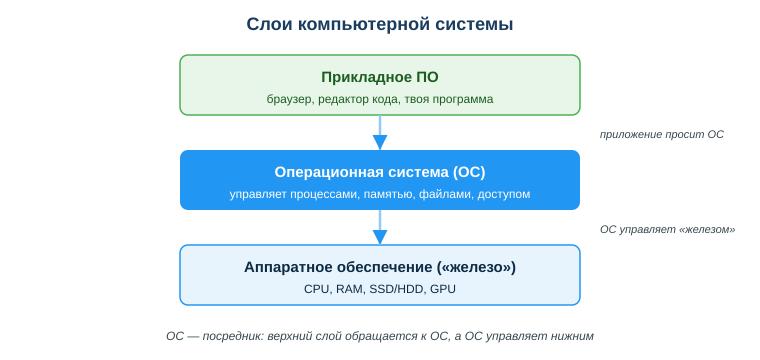
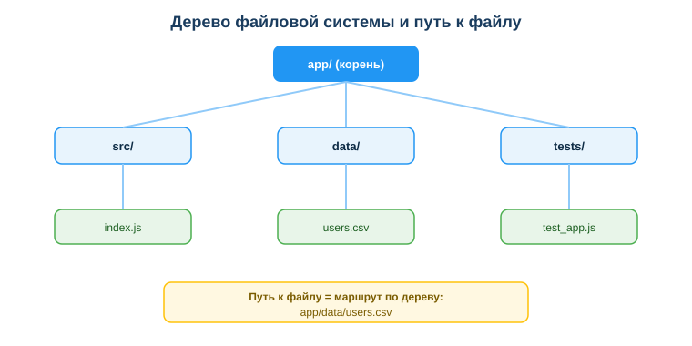

Дисциплина: Применение информационно-коммуникационных и цифровых технологий
Результат обучения: РО 2.1 — владение основами ИКТ · Объём темы: 2 часа
Квалификация: 4S06130103 «Разработчик программного обеспечения»
«У меня работает, а у него — нет». Это, наверное, самая знаменитая фраза в разработке. Ты написал программу, проверил — на твоём ноутбуке всё запускается, всё считается, всё выводится. Отправляешь код одногруппнику или выкладываешь на учебный сервер — и получаешь красную ошибку: «файл не найден», «модуль не найден», «нет доступа». Кода ты не менял ни строчки. В чём дело?
Почти всегда дело не в коде, а в окружении — в той среде, где код выполняется. У тебя Windows, а на сервере Linux. У тебя файл назывался Data, а на сервере — data. У тебя файл лежал по адресу C:\Users\Ivan\app, а у коллеги такой папки вообще нет. Программа сама по себе правильная, но она работает не в вакууме: под ней лежат слои — аппаратное обеспечение («железо»), операционная система и файловая система. Если ты не понимаешь эти слои, ты будешь часами ловить «загадочные» ошибки, которые «появляются сами». Если понимаешь — ты соберёшь рабочую среду осознанно и за минуты найдёшь причину сбоя [1; 4].
Эта тема — фундамент всей твоей будущей работы. Разработчик каждый день работает в терминале, ставит окружение, разворачивает код на серверах под управлением Linux, выбирает компьютер под задачи. Умение читать пути, понимать, что важно в «железе», и держать структуру проекта в порядке — это то, что отличает специалиста, у которого «просто работает», от новичка, который постоянно борется с настройкой. Посмотри на схему слоёв системы (приложение А) — с неё и начнём.
После изучения темы ты сможешь:
.py, .js, .csv), подсказывающая тип файла.Главная идея, которую нужно усвоить первой: твоя программа не общается с «железом» напрямую. Между ней и физическими микросхемами есть посредник — операционная система. Посмотри на схему «Слои компьютерной системы» (приложение А). Снизу вверх там три слоя:
Аналогия. Представь большое офисное здание. «Железо» — это само здание: стены, провода, лифты, электричество. Прикладные программы — это сотрудники, которые работают в кабинетах. А операционная система — это администрация и инженерные службы здания: они решают, кому какой кабинет (память), в каком порядке пускать людей в лифт (процессор), где хранить документы (файлы) и у кого есть ключ от какой двери (доступ). Сотрудник (программа) не лезет сам в электрощиток — он звонит в службу (делает запрос к ОС), и та делает работу.
Поэтому, когда твоя программа хочет прочитать файл или попросить ещё памяти, она не «лезет в диск» сама — она обращается к ОС с запросом, а ОС уже выполняет его и возвращает результат. Именно за это ОС называют посредником. Запомни эту картину: дальше всё в теме — компоненты ПК, ОС, файлы — это просто детальный разбор каждого из трёх слоёв.
Теперь спустимся на нижний слой — «железо». Тебе не нужно быть инженером-электронщиком, но понимать, за что отвечает каждый компонент и что из этого ускоряет твою работу, обязательно — хотя бы для того, чтобы грамотно выбрать себе рабочий ноутбук.
| Компонент | За что отвечает | Почему это важно тебе |
|---|---|---|
| Процессор (CPU) | вычисления, выполнение команд | скорость сборки кода, прогон тестов |
| Оперативная память (RAM) | данные «здесь и сейчас» | сколько программ, вкладок, контейнеров потянешь одновременно |
| Накопитель (SSD/HDD) | долговременное хранение файлов | SSD кратно ускоряет открытие проекта и установку библиотек |
| Видеокарта (GPU) | графика, параллельные вычисления | нужна для игр, графики, обучения нейросетей |
Разберём подробно.
Процессор (CPU) — это «мозг», который выполняет команды программы одну за другой (а в современных процессорах — параллельно несколькими ядрами). Чем он быстрее, тем быстрее компилируется код и считаются тесты. Но вот что важно понять новичку: для повседневной веб- и прикладной разработки процессор редко бывает узким местом. Современный средний процессор справляется с написанием кода легко.
Оперативная память (RAM) — это рабочий стол, на котором лежат данные программ, пока они запущены. Выключил компьютер — стол очистился. Чем больше RAM, тем больше всего ты можешь держать открытым одновременно: редактор кода, браузер с десятком вкладок документации, базу данных, несколько контейнеров. Когда RAM не хватает, компьютер начинает «своповать» — сбрасывать часть данных на диск, и всё резко тормозит. Для разработчика 8 ГБ сегодня — минимум, 16 ГБ — комфортно.
Накопитель (SSD или HDD) — место, где файлы хранятся постоянно (даже после выключения). HDD — это старый диск с вращающейся пластиной, медленный. SSD — твердотельный накопитель без движущихся частей, в разы быстрее. Разница для разработчика огромная: установка библиотек, открытие большого проекта, запуск среды разработки на SSD происходят за секунды, а на HDD — за десятки секунд или минуты. SSD — это, пожалуй, самое выгодное вложение в скорость работы.
Видеокарта (GPU) нужна не всем: для веб-разработки и обычных приложений хватает встроенной графики. Отдельная мощная GPU критична для игр, 3D-графики и обучения нейросетей (машинного обучения), потому что она умеет делать тысячи однотипных вычислений параллельно.
Поднимаемся на средний слой. Операционная система (ОС) — программа-посредник между тобой, приложениями и «железом». Чтобы понятие не осталось абстрактным, запомни ОС через четыре вещи, которыми она управляет [4]:
Аналогия: ОС — это диспетчер аэропорта. Самолёты (программы) сами не решают, кому когда взлетать; диспетчер (ОС) распределяет полосы (процессор), стоянки (память), грузы по складам (файлы) и пропуска (доступ). Без диспетчера был бы хаос и столкновения.
Когда ты запускаешь свою программу командой в терминале, происходит цепочка: ты просишь ОС → ОС создаёт процесс, выделяет ему память, даёт доступ к нужным файлам → процесс выполняется → ОС освобождает ресурсы, когда программа завершилась. Понимание этого помогает читать ошибки: «нет прав доступа» — это про слой доступа, «недостаточно памяти» — про слой памяти, «файл не найден» — про слой файлов.
Самые распространённые ОС, с которыми ты столкнёшься, — Windows и Linux. У них разная философия и разные роли.
Windows — привычная среда для большинства пользователей. Под неё написано огромное количество прикладных программ, она дружелюбна к новичку, на ней ты, скорее всего, учишься прямо сейчас.
Linux — операционная система, на которой работает большинство серверов в мире. Это значит, что когда твой код «уезжает в продакшен» (то есть начинает работать по-настоящему, обслуживая реальных пользователей), он почти наверняка выполняется на Linux-сервере. Linux бесплатен, гибок, экономичен и стабилен — поэтому его выбирают для серверов, облаков и контейнеров.
Вот ключевая мысль: разработчику нужно знать обе ОС. На Windows ты удобно работаешь и пользуешься привычными программами; в Linux ты должен уметь ориентироваться, потому что туда попадёт твой код. Именно отсюда растёт знаменитый баг «работает только у меня»: ты разрабатывал на Windows (где, например, регистр в именах файлов не важен), а сервер на Linux (где важен) — и программа ведёт себя иначе.
Как это решают на практике. Чтобы среда разработки совпадала с серверной и баги «работает только у меня» исчезли, на Windows ставят Linux-окружение прямо внутри:
Идея у всех одна: сделать так, чтобы у тебя на машине окружение было таким же, как на сервере. Тогда «у меня работает» автоматически означает «и на сервере заработает». Это прямо разбирается в продвинутой части задания к занятию — как настроить единое окружение команды через WSL/контейнер/виртуальную машину.
Переходим к слою файлов — для разработчика это, пожалуй, самая «рабочая» часть темы. Файлы хранятся не вперемешку, а в виде дерева: папки вложены в папки, в них лежат файлы. Посмотри на схему «Дерево файловой системы и путь к файлу» (приложение Б): от корня вниз ветвятся папки, а в самом низу — конкретный файл. Чтобы добраться до файла, ты проходишь по веткам этого дерева сверху вниз — этот маршрут и называется путь.
Путь — это адрес файла. Как у дома есть адрес «город → улица → дом → квартира», так у файла есть адрес «диск/корень → папка → подпапка → файл». И как письмо не дойдёт по неправильному адресу, так и программа не найдёт файл по неправильному пути. Бывают два вида путей.
Абсолютный путь — это полный адрес от самого начала (от корня файловой системы). Он всегда указывает на одно и то же место, откуда бы ты его ни читал:
C:\projects\app\index.js (начинается с буквы диска, разделитель — обратный слеш \);/home/user/app/index.js (начинается с / — корня, разделитель — прямой слеш /).Относительный путь — это адрес от того места, где ты сейчас находишься (от текущей папки):
./src/index.js — «здесь, в подпапке src, файл index.js» (./ — текущая папка);../data/file.csv — «на уровень выше, в папке data, файл file.csv» (.. — родительская папка).Почему это важно для тебя. Абсолютный путь C:\Users\Ivan\app\data.csv существует только на компьютере Ивана. У коллеги нет папки Users\Ivan, на сервере её тоже нет — и код упадёт. А относительный путь ./data/data.csv работает у всех, потому что он отсчитывается от корня самого проекта, который есть у каждого. Правило: внутри проекта используй относительные пути, а не абсолютные.
Теперь три детали, на которых спотыкаются почти все новички.
Расширение файла (.js, .py, .csv, .txt) — это часть имени после последней точки. Оно подсказывает тип файла и то, какой программой его открывать: .py — код на Python, .csv — таблица, .md — текст в разметке. Но запомни важную тонкость: расширение лишь подсказывает тип, но не гарантирует содержимое. Можно переименовать картинку в photo.txt — она не станет текстом, просто система запутается. Расширение — это «подпись на конверте», а не само письмо.
Регистр букв — самая коварная вещь. В Linux File.js и file.js — это два разных файла. В Windows это один и тот же файл (регистр не различается). Отсюда и берётся классический баг: на твоём Windows код с путём Data/users.csv находит файл data/users.csv (Windows не видит разницы между Data и data), а на Linux-сервере — нет, потому что для Linux это разные имена. Программа падает с «файл не найден», хотя «у тебя же работало». Это разобрано в мини-кейсе урока и в упражнении 3.
Скрытые файлы в стиле Linux начинаются с точки: .gitignore, .env. Точка в начале имени делает файл «скрытым» — он не мозолит глаза в обычном списке, но никуда не девается. В таких файлах часто хранят настройки и секреты (например, .env — переменные окружения, пароли, ключи), поэтому к ним относятся бережно.
Файлы проекта нельзя просто свалить в одну папку. Опытные разработчики держат типовую структуру, чтобы и им, и команде было сразу понятно, где что лежит:
app/
src/ исходный код программы
tests/ тесты
docs/ документация
data/ данные (csv, json и т. п.)
README.md описание проектаЗачем это нужно? Во-первых, скорость ориентации: любой человек (включая тебя через месяц) сразу понимает, где искать код, где тесты, где данные. Во-вторых, меньше ошибок: когда данные лежат в data/, а тесты в tests/, ты не перепутаешь их и не сломаешь импорт. В-третьих, командная работа: единая структура — это общий язык, на котором договорилась команда.
Хорошая тренировка — взять «свалку» файлов и разложить её по полочкам. Например, из набора index.js, test1.js, photo.png, readme, users.csv, helper.js, test2.js, styles.css правильная раскладка такая: код (index.js, helper.js) → src/; тесты (test1.js, test2.js) → tests/; данные (users.csv) → data/; картинки и стили (photo.png, styles.css) → assets/; а файл readme стоит переименовать в README.md и оставить в корне (это разобрано в упражнении 4). Привычка наводить порядок с первого дня — один из самых дешёвых способов сэкономить себе часы в будущем.
Из проблем с регистром и путями вырастает простое, но очень важное правило именования. Имена файлов и папок давай латиницей, в нижнем регистре, без пробелов — слова разделяй дефисом или подчёркиванием:
Мои Файлы/Главный Скрипт.py → хорошо: my-files/main-script.py;Data.CSV → хорошо: data.csv;тест 1.js → хорошо: test-1.js или test_1.js.Почему именно так?
файл 1.py он прочитает как два разных слова. Приходится оборачивать в кавычки, и легко ошибиться.Эта привычка кажется мелочью, но именно она избавляет от целого класса «загадочных» ошибок при работе в команде и на сервере. Заведи её прямо сейчас, в учебных проектах.
Сведём всё воедино на главной проблеме темы. Когда код работает у тебя и падает на сервере, причина почти всегда в одном из различий окружения:
Data vs data, Main.js vs main.js.C:\Users\Ivan\..., которых нет ни у кого, кроме Ивана.Хорошая новость: всем этим различиям есть единое лекарство — сделать окружение одинаковым и писать переносимый код. Используй относительные пути, единый стиль имён (латиница, нижний регистр), а для совпадения системы — WSL или контейнеры. Тогда фраза «у меня работает» начинает означать «работает и у всех остальных». Это и есть профессиональная зрелость в работе с окружением.
Пример 1 — баг с регистром (мини-кейс урока). Код запускается на твоём Windows-компьютере, но падает на Linux-сервере с ошибкой «файл не найден». В коде путь: Data/users.csv, а на сервере файл называется data/users.csv.
Разбор: Windows не различает регистр, поэтому Data и data для него одно и то же — у тебя файл нашёлся. Linux различает регистр — для него это разные имена, файла Data нет, отсюда ошибка. Решение: привести путь в коде к фактическому имени в нижнем регистре (data/users.csv) и впредь держать единый стиль имён — латиница, нижний регистр.
Пример 2 — выбор компьютера (упражнение 1). Нужен ноутбук под веб-разработку с несколькими контейнерами. Конфигурации: A — топовый CPU, 8 ГБ RAM, HDD; B — средний CPU, 16 ГБ RAM, SSD; C — средний CPU, 8 ГБ RAM, SSD.
Разбор: правильный выбор — B. Контейнеры и множество вкладок требуют много RAM, а SSD кратно ускоряет открытие проекта и установку библиотек. Топовый процессор конфигурации A не спасает, потому что её главное узкое место — медленный HDD и всего 8 ГБ RAM. Вывод: для разработки RAM и SSD важнее «крутости» CPU.
Пример 3 — три проблемы в одном фрагменте (упражнение 3). Код работает на Windows, но падает на Linux:
открыть файл "Data/Users.csv"
подключить модуль "./Utils/Helper.js"
сохранить в "мои данные/отчёт 1.txt"Разбор: здесь сразу три источника проблем. Регистр: Data/Users/Utils/Helper на Linux не совпадут с реальными именами в нижнем регистре. Кириллица: мои данные и отчёт ломаются на сервере с другой локалью. Пробелы: мои данные и отчёт 1 терминал воспримет как разорванные имена. Правильно: data/users.csv, ./utils/helper.js, my-data/report-1.txt.
Пример 4 — абсолютный путь в коде. Разработчик прописал в программе путь C:\Users\Ivan\app\data.csv. У него всё работает.
Разбор: у коллеги нет папки Users\Ivan, на сервере её тоже нет — код упадёт с «файл не найден». Это типичная ошибка жёстко прошитого абсолютного пути. Правильно — относительный путь от корня проекта: ./data/data.csv. Он работает на любой машине, где лежит проект.
C:\Users\...). Почему: такого пути нет ни у коллег, ни на сервере. Как правильно: используй относительные пути от корня проекта.Мой Проект/файл 1.py). Почему: ломают команды терминала, импорт и развёртывание; создают баг с регистром между Windows и Linux. Как правильно: латиница, нижний регистр, дефис/подчёркивание (my-project/file1.py).- или _);src/, tests/, data/, docs/, README.md);Data/users.csv может работать на Windows и падать на Linux?C:\app\f.js, /home/user/app/f.js)../src/f.js, ../data/f.csv)..py, .csv)..gitignore, .env).src/, tests/, data/).Основная литература:
Дополнительно:
Нормативные источники РК:
Электронные ресурсы и документация:
assets/02_shema-sloi-sistemy.svg. Читай снизу вверх: «железо» → операционная система (посредник) → прикладные программы. Твоя программа обращается к «железу» только через ОС.assets/02_shema-derevo-fs.svg. От корня вниз ветвятся папки, в листьях — файлы; маршрут от корня к нужному файлу и есть путь.

Материал подготовлен на основе урока темы (urok.md) и приведённых в конце источников; он расширяет и углубляет содержание урока для самостоятельного изучения. Источники приведены главами и ссылками (без номеров страниц); нормативные акты — с реквизитами.
Материал разработан рабочей группой ТОО «Колледж Хекслет Казахстан» и одобрен к использованию в обучении решением Педагогического совета.